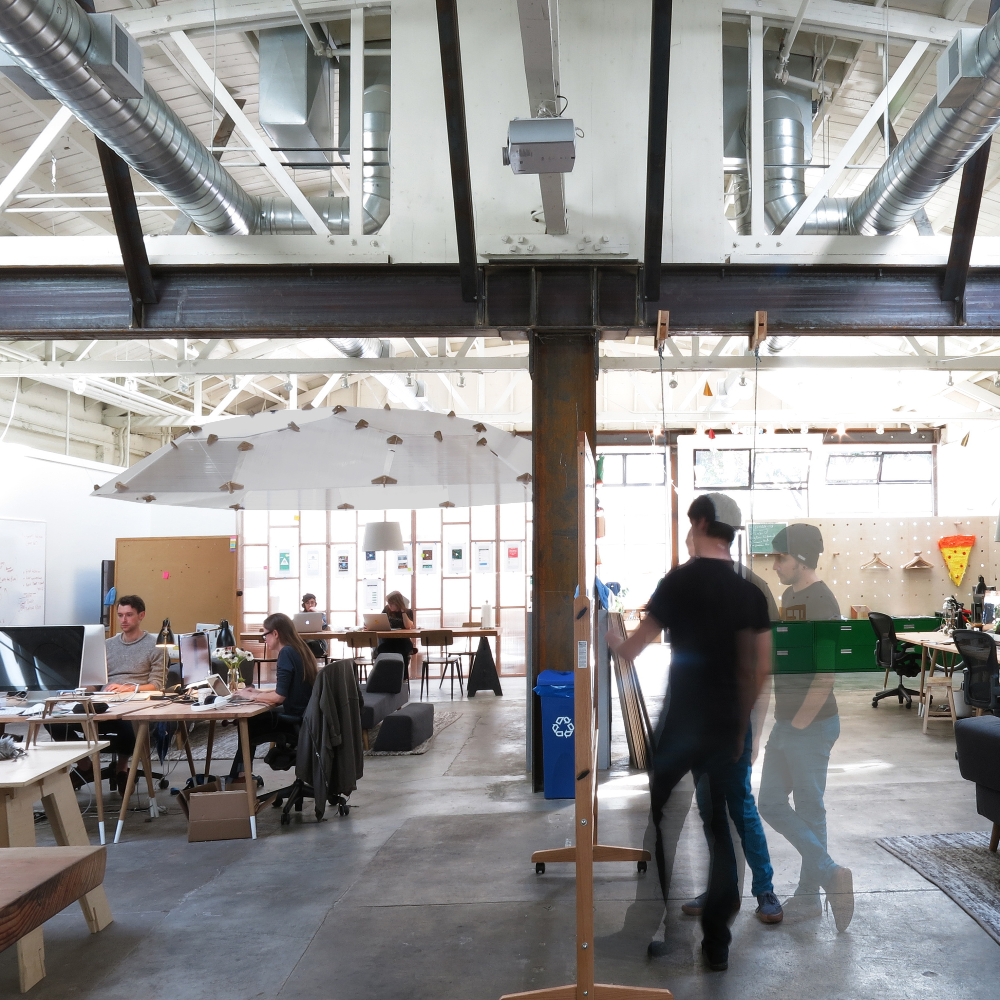
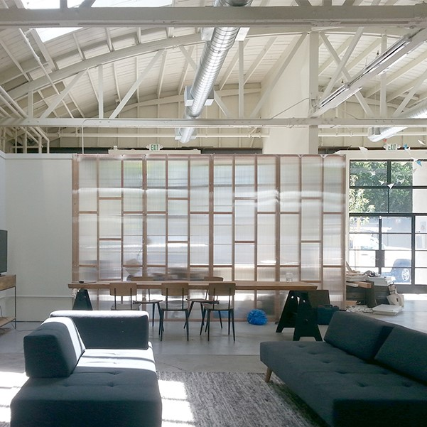

In 2013, the educational tech startup DIY (later acquired by Little Bits / Sphero) commissioned Vessel to fit out the interior of an
auto body shop in the Mission District of San Francisco as their new headquarters. One of the great challenges and often failures of the open office is the lack of sound privacy as well
as the unwanted propagation of the sound.


Together with the office staff, we raised a “sound dome” to fashion an invisible room in the middle of the office.
Transducers mounted to the polycarbonate panels diffused a selection of ambient sound patterns,
producing a space beneath which masked conversations and provided an antidote to the cacophony of open office life.